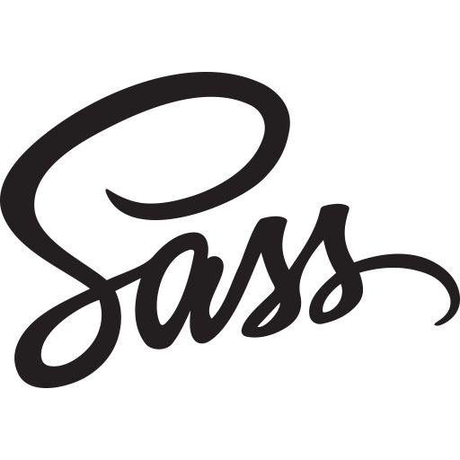

關於我-陳怡彣Claire
建議使用平板、桌機觀看Parallax Scrolling效果





我是陳怡彣Claire
多媒體設計系畢業後，一直在設計領域學習精進將近十年，從前期設計規劃軟體到網站設計製作 (HTML5、SCSS、JS、RWD、Bootstrap)。
我畢業於國立台中科技大學多媒體設計系，這段時間裡，我一直專注在網頁設計領域的深耕。一開始，我使用Dreamweaver、HTML、CSS等工具製作各種專案，透過這些實踐累積了相當豐富的能力。隨著經驗的增長，我更進一步投入了教學領域，成為連鎖補習班的設計講師。這段時間的教學經驗不僅鞏固了我的技能，還培養了我在與他人合作中的溝通與協作能力。
在職業生涯中期，我深入接觸軟體開發，與工程師合作參與專案開發，負責版面設計與切版，並導入SEO策略提升網站可見性。面對瀏覽器支援差異，我學會針對不同版本的IE進行優化，確保最佳效果。
隨著職涯發展，我深入研究CSS，學習SCSS與JavaScript，並使用Git版本控管與VS Code編輯器。我有初略的Vue.js和Leaflet.js使用經驗，以及Lottie庫的嵌入動畫技能。這些能力使我能夠提供豐富的互動元素，並應對不同需求。 我經常使用Bootstrap CSS框架和SCSS快速構建現代感網頁。參與政府機關部門的專案使我熟悉建構無障礙網頁，關注使用者需求。這些實戰經驗與專業知識使我相信能在貴公司團隊中提供卓越的前端開發解決方案。期待能與您合作，打造出優秀的作品。